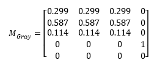

Converts an image to monochromatic gray.
Grayscale uses the color matrix effect to convert to grayscale, using the following matrix:

The CLSID for this effect is CLSID_D2D1Grayscale.
This effect has no properties.
| Requirement | Value |
|---|---|
| Minimum supported client | Windows 10 [desktop apps | Windows Store apps] |
| Minimum supported server | Windows 10 [desktop apps | Windows Store apps] |
| Header | d2d1effects_2.h |
| Library | d2d1.lib, dxguid.lib |